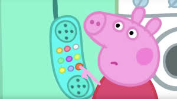

Today's Daily Sip of Tea
PEPPA PIG THROWS SHADE

Peppa is a loved character by all (minus Dora). She is loved for her enthusiasm, and sense of humour. But throught the seasons of her show, you kind of notice that she is 2 sided. Her inncoent child side, and her shady salty side. In season 3 episode 8, Peppa tries to learn how to whistle. She then calls one of her best friends, Suzy Sheep to ask if she can whistle. When Suzy Sheep whistles into the phone, Peppa Pig gets very salty (mad) and hangs up on her friend with an annoyed look. Who could have known Peppa was a salty pig. (oink oink)